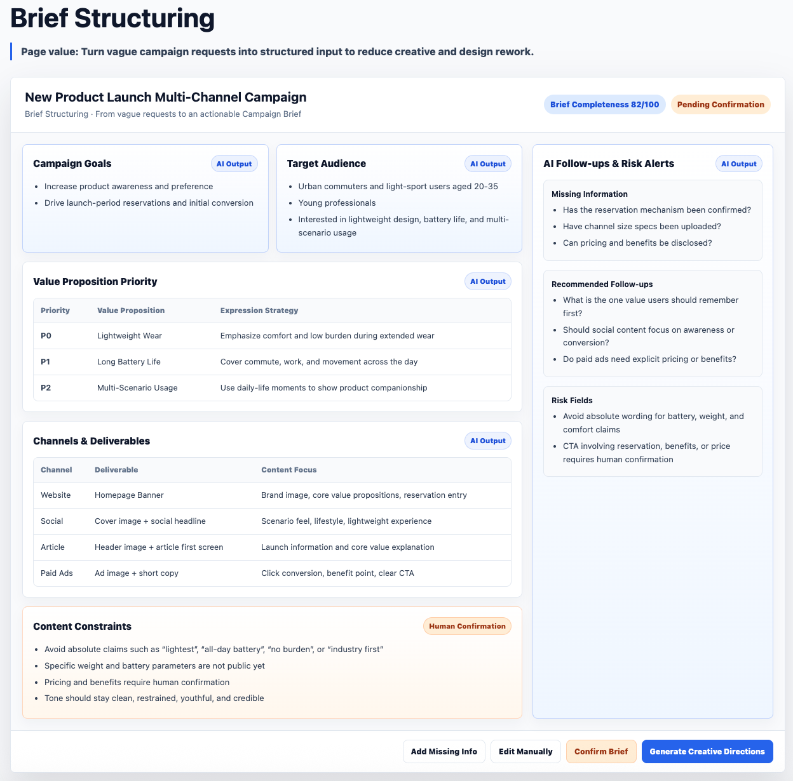
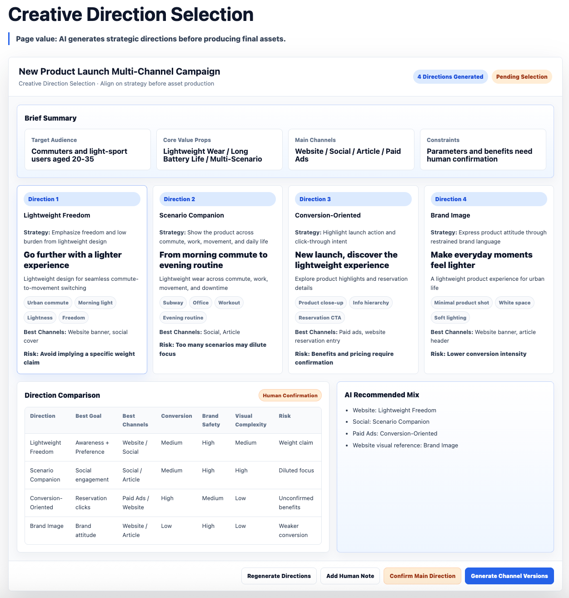
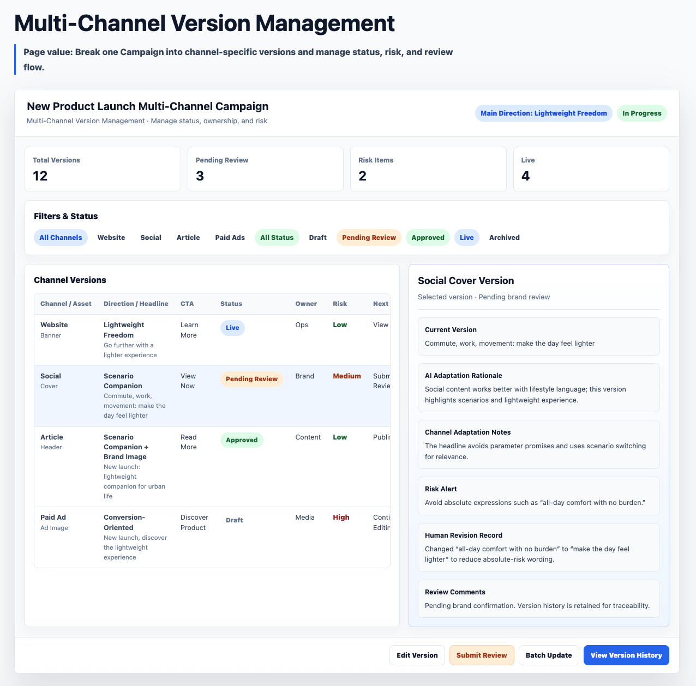
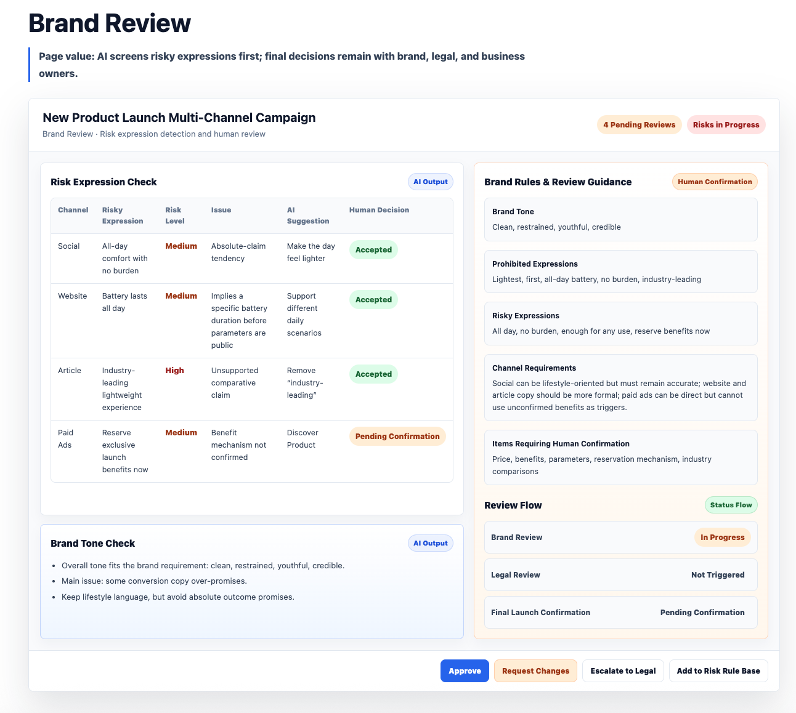
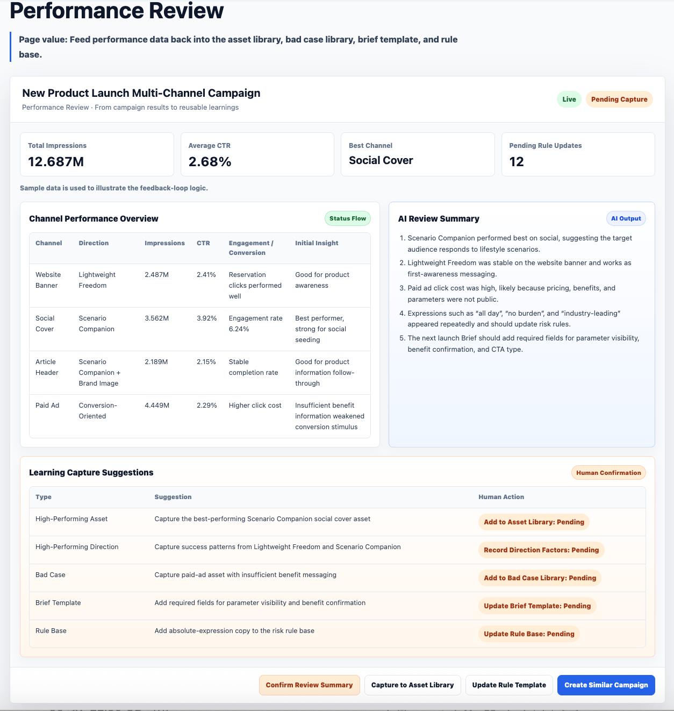

One-line requests are not executable
Campaign requests often lack audience, value priority, channel goals, content constraints, and review requirements.
Project 03｜Content-based AI Application
From Campaign Brief to multi-channel assets, brand review, and performance feedback
One-click generation is not productivity. Productivity starts when AI enters the production workflow.
This project is not about generating a single marketing image. It shows how AI can support campaign brief structuring, creative direction, multi-channel adaptation, brand review, performance feedback, and reusable content assets.
01 · Business Problem
The problem in content production is often not that teams cannot generate content. It is that generated content has nowhere reliable to go next.
Campaign requests often lack audience, value priority, channel goals, content constraints, and review requirements.
Teams jump into production before direction alignment, causing late-stage creative rework.
Website, social, article, and paid ads all require different copy, CTA, tone, and visual focus.
Brand comments and performance data rarely flow back into the next Brief, rule base, or generation strategy.
02 · AI-enabled Content Production Workflow
AI does not replace the content production process. It is embedded into key nodes to structure inputs, explore directions, adapt versions, check rules, and support review while preserving human judgment.
From One-off Production to a Reusable Content Operating Mechanism
03 · AI Intervention Points
AI enters Brief structuring, creative direction, channel adaptation, brand risk checks, and feedback capture. Humans keep business judgment, creative selection, brand approval, legal confirmation, launch decisions, and which learnings become rules.
Break one-line requests into audience, value priorities, channels, and constraints.
Support strategy discussion before the team commits to final production.
Prepare titles, CTA, visual notes, and risk reminders for different channels.
Expose brand risks and feed campaign learning into reusable assets and rules.
04 · Core Product Responsibility Unit
The product responsibility unit is not a generated image. It is the full chain from Campaign Brief to creative direction, channel versions, brand review, human approval, feedback, and asset learning.
AI: identify missing fields and structure audience, value, channels, and constraints.
Human: confirm business goal and value priority.
Output: executable Campaign Brief.
AI: generate directions and adaptation suggestions.
Human: choose the main direction based on brand and business goals.
Output: confirmed communication direction.
AI: generate titles, CTA, visual notes, and risk prompts.
Human: edit, select, and confirm versions.
Output: channel-specific content versions.
AI: check prohibited wording, absolute claims, and channel rules.
Human: brand, legal, and business owners approve or request changes.
Output: launchable version or revision note.
AI: summarize performance differences.
Human: confirm whether attribution is valid.
Output: review conclusions.
AI: propose asset library, badcase, Brief template, and rule updates.
Human: decide which learnings become organizational assets.
Output: reusable input for the next Campaign.
05 · Product Evolution
Problem: unclear requests and unclear directions.
Value: reduce early communication cost and direction rework.
Problem: repetitive adaptation and messy version status.
Value: improve content production collaboration.
Problem: brand risk and non-reusable learnings.
Value: form a controllable and reusable content production mechanism.
06 · Key Prototypes
The sample data shown in these screens explains the product mechanism and does not represent real commercial campaign results.





07 · Product Decisions
If the input is unclear, faster AI generation can simply create faster rework.
Using creative direction as a middle state helps teams align before production.
Every channel version keeps status, risk level, revision notes, and human confirmation.
Performance results should update assets, bad cases, Brief templates, and rule bases.
08 · Feedback Loop and Organizational Assets
Each Campaign becomes more than one-off production. AI shifts from “generating an image” to helping the organization accumulate reusable content production capability.
Reusable Assets
Improve Brief quality, reduce communication and rework, increase multi-channel production efficiency, improve brand consistency, and feed campaign performance into the next round.
Turn scattered production experience into reusable assets, transform static brand guidelines into callable rules, and convert review comments into rule updates.
Define products from business workflow rather than tool features, clarify AI intervention points and human review boundaries, and upgrade one-off generation into a traceable workflow.
09 · Validation and Boundary
This project is suitable for validating whether Brief completeness improves, creative direction rework decreases, channel versions become easier to manage, brand risks are exposed earlier, human approval covers key decisions, and campaign feedback can become reusable assets and rules.
Brief quality, direction alignment, version management, risk exposure, human approval coverage, and feedback reuse.
No claim of real commercial campaign results, click-through lift, conversion lift, or sales impact.
AI does not replace designers, brand reviewers, legal judgment, or launch approval.